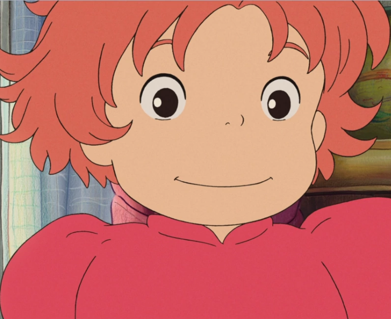
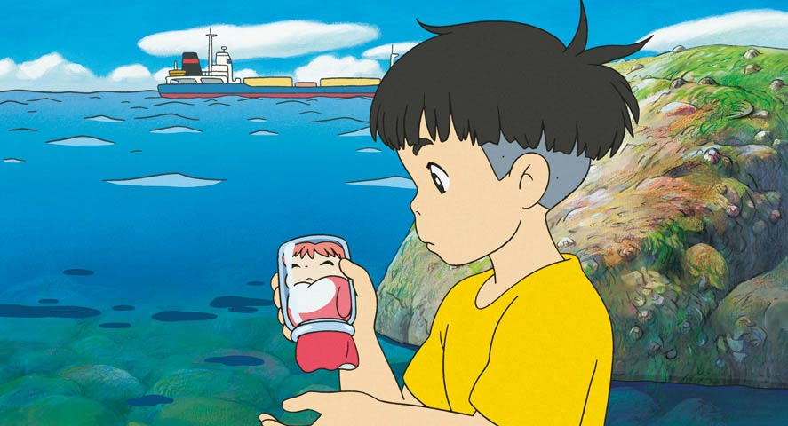
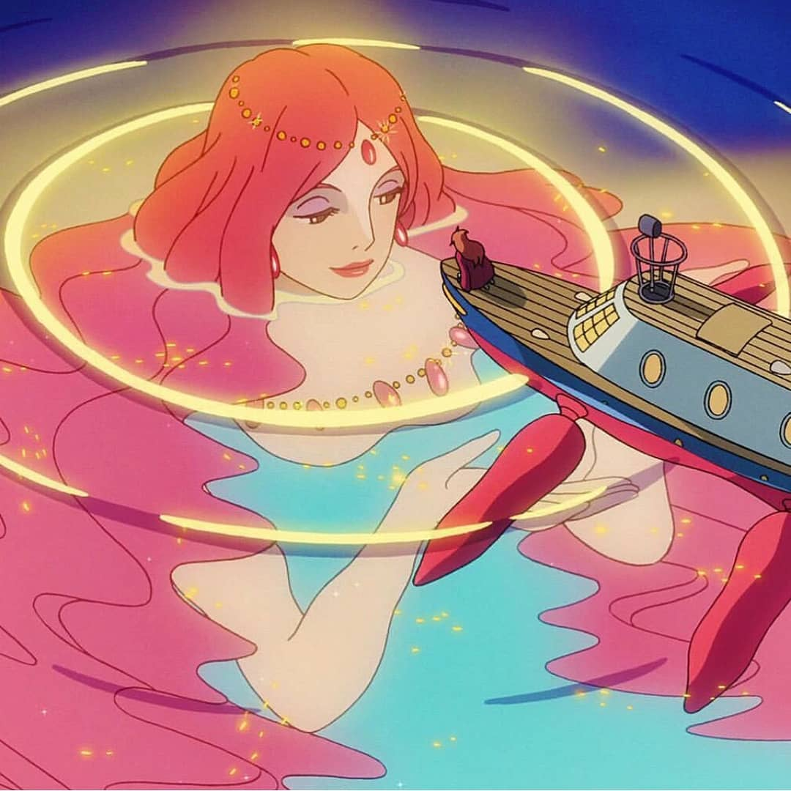
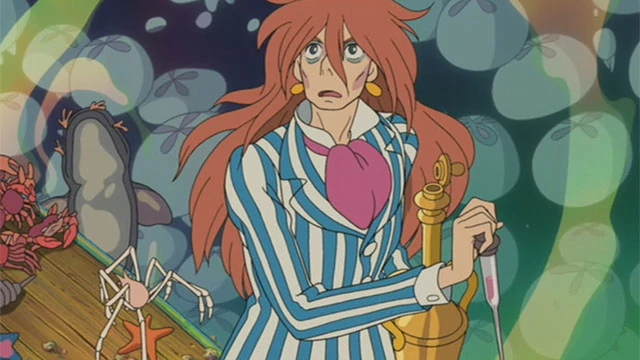

Ponyo (ポニョ, Ponyo), born Brunhilde (ブルンヒルデ, Burunhirude) is one of the main protagonists of the film Ponyo on the Cliff by the Sea directed by Hayao Miyazaki. She is a magical fish descended from the Sea Goddess. She is voiced by Yuria Nara in the Japanese and Noah Cyrus in the English version.
Sōsuke (さすけ, Sosuke) is one of the main protagonists of the film Ponyo on the Cliff by the Sea directed by Hayao Miyazaki. He is the son of Koichi and Lisa, as well as Ponyo's friend.
Granmamare (グランママレ, Guranmamare) is the Goddess of Mercy and the Queen of the ocean. She is the wife of Fujimoto and the mother of Ponyo and all her sisters. When she spoke to Lisa after the city was flooded, she entrusted Ponyo into her care, thus ensuring her daughter's safety and protection.
Fujimoto is a father to Ponyo and to Ponyo's Sisters and husband to Granmamare in Ponyo on the Cliff by the Sea. Despite being viewed as the antagonist, he expresses his intentions are only in his daughter's best interest, so he isn't really a villain. He lives with his family in the underwater harbor.
